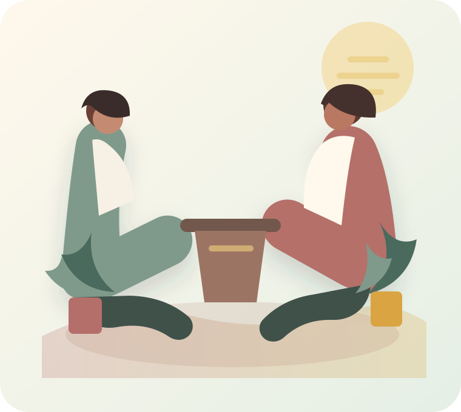

01
My mind will not switch off.
I keep replaying conversations, worrying about what could go wrong, or feeling tired from thinking about everything.
Private one-to-one life coaching for women
A calm place to talk through the relationships, family pressure, overthinking, and life changes that are weighing on you.
With Rajashri Nanjangud

When a conversation could help
You can begin with what feels most present. These are a few reasons women reach out, but you do not need to fit any one description exactly.
01
I keep replaying conversations, worrying about what could go wrong, or feeling tired from thinking about everything.
02
People depend on me, but I feel unseen, unsupported, or close to exhaustion.
03
I want to understand what I need, say it more clearly, and move forward with less guilt or confusion.
The first session
Share what feels difficult in your own words, at your own pace.
Notice the feelings, patterns, and choices beneath what is happening.
Leave with a clearer direction that fits your real life.
About Rajashri
Rajashri Nanjangud offers a steady, non-judgemental space to pause, untangle what feels difficult, and move forward in a way that respects your relationships, values, and circumstances.
Coaching is conversation-led and practical. You set the pace.
Selected training
Coaching Mastery Program
Certificate of completion
Psychological Testing and Counselling training
Mental Health and Well-being Department
Session options
You do not need to commit to a package before you know whether coaching feels useful.
Astrology can be included as an optional reflective tool only when it is meaningful to you. It is never required for coaching.
A clear scope
Coaching can support everyday challenges and decisions. It is not emergency support and does not replace therapy, psychiatric care, or medical treatment.
No. You can begin with what feels most difficult right now.
No. Rajashri helps you see patterns and options, but the final choices remain yours.
No. Life coaching is the focus. Astrology is an optional reflective tool, included only if you ask for it.
Let's talk
Send Rajashri a message. She will reply to discuss availability and fees; your session is confirmed separately.
This is a coaching service, not emergency or crisis support. If you are in immediate danger or feel at risk of harming yourself, contact local emergency services or a crisis helpline right away.